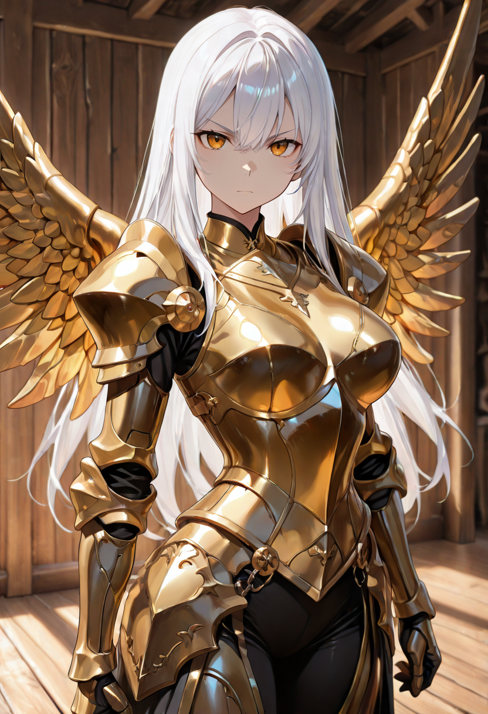
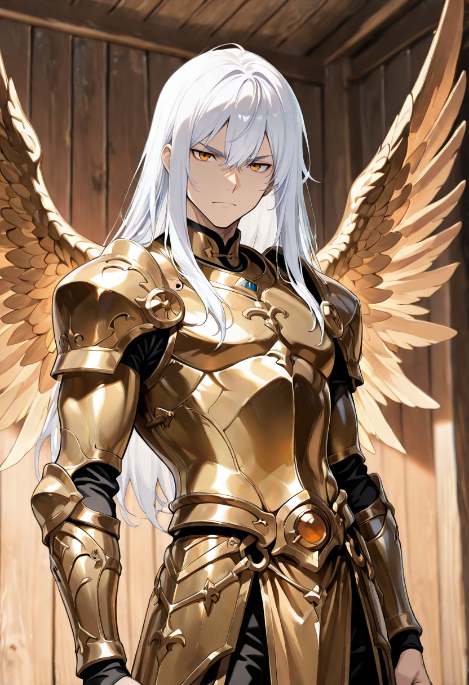
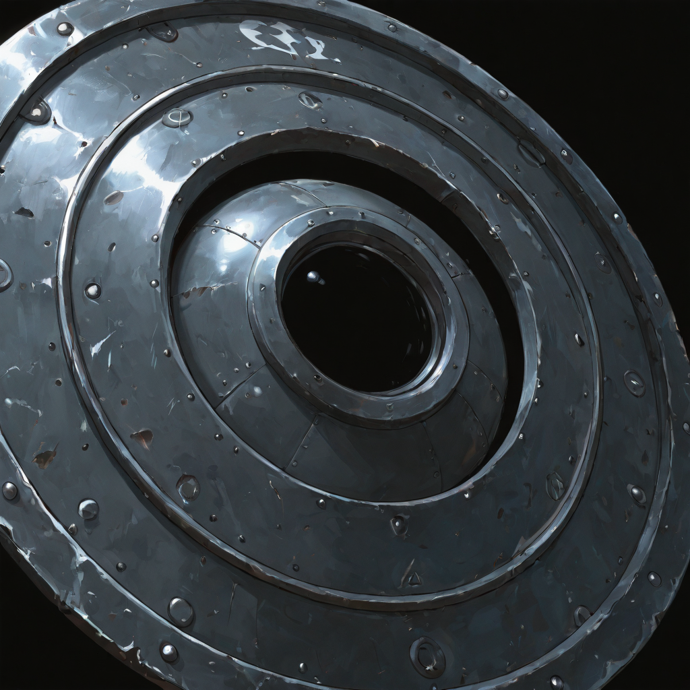
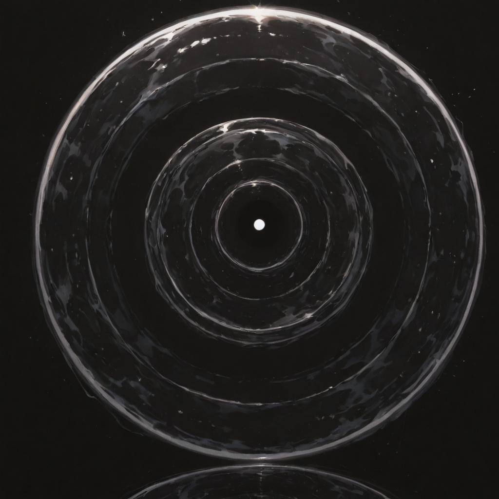

Incorruptible
They remember the skies. Not the memory of a battlefield , the memory of freedom. The Squire of the Homeland still has vestiges of their arboreal form, but they have shed it the way a tree sheds bark: not in loss, but in growth. What remains is a warrior who moves faster, fights harder, and feels the wind through the hollows of what were once branches.
The description is always the same: "incorruptible." The Council of Whispers uses this word not in the moralizing sense, but the literal one. Their soul has achieved a quality of structural integrity that resists magical corruption, terror, and manipulation. Attempts to turn a Squire against the Empire have a reliably poor success rate.
They have also developed something unique among the Defender path: the ability to project their protective instinct outward. Assorbimento dell'anima is not merely a defensive technique , it is the Squire's will to suffer on behalf of others made into physical mechanics, into statistics, into armor ratings. The thing they died protecting, they now protect differently.
Tactical Data

Shield Bash
Base Attack
Materialization
ActiveSoul Absorption
PassiveGallery